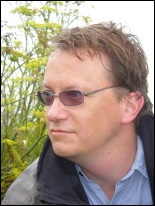

SSBSE’2014 is please to present our three speakers.
KEYNOTE SPEAKERS
- Mauro Pezzè (University of Lugano)
{kind=link}
Mauro Pezzè is Professor of Software Engineering at the University of Milano Bicocca and at the University of Lugano where he has served as dean of the faculty of informatics from 2009 to 2012. He is the leader of the STAR research group of the University of Lugano, and the director of the LTA research lab. of the University of Milano Bicocca. He received his PhD degree in computer science from Politecnico di Milano (Italy).
Dr. Pezzè is serving as associate editor of IEEE Transactions on Software Engineering, has served as associate editor of ACM Transactions on Software Engineering and Methodologies, general chair of the 2013 ACM International Symposium on Software Testing and Analysis (ISSTA), technical program chair of the 2006 ACM International Symposium on Software Testing and Analysis (ISSTA), program co-chair of the 2012 International Conference on Software Engineering (ICSE).
The research interests of dr. Pezzè are in the area of software engineering and in particular software testing and analysis, self-adaptive and self-healing systems and formal methods for software engineering. Dr Pezzè is co-author of over 100 peer reviewed papers and of the widely used book Software Testing and Analysis: Process, Principles and Techniques, published in 2007 by John Wiley.
Intrinsic Software Redundancy: Applications and Challenges – Download
Abstract Search-based software engineering has many important applications. Here, we identify a novel use of search-based techniques to identify redundant components. Modern software systems are intrinsically redundant, and such redundancy finds many applications. In this paper we introduce the concept of intrinsic redundancy, and we present some important applications to develop self-healing systems and auto matically generate semantically relevant oracles. We then illustrate how search-based software engineering can be used to automatically identify redundant methods in software systems, thus paving the road to an efficient exploitation of intrinsic redundancy, and opening new research frontiers for search-based software engineering.
- Marc Schoenauer (INRIA France)
 Marc Schoenauer is Principled Senior Researcher (Directeur de Recherche 1ère classe) with INRIA, the French National Institute for Research in Computer Science and Control. He graduated at Ecole Normale Supèrieure in Paris, and obtained a PhD in Numerical Analysis at Université Paris 6 in 1980. From 1980 until Aug. 2001 he has been full time researcher with CNRS (the French National Research Center), working at CMAP (the Applied Maths Laboratory) at Ecole Polytechnique. He then joined INRIA, and later founded the TAO team at INRIA Saclay in September 2003 together with Michèle Sebag.
Marc Schoenauer is Principled Senior Researcher (Directeur de Recherche 1ère classe) with INRIA, the French National Institute for Research in Computer Science and Control. He graduated at Ecole Normale Supèrieure in Paris, and obtained a PhD in Numerical Analysis at Université Paris 6 in 1980. From 1980 until Aug. 2001 he has been full time researcher with CNRS (the French National Research Center), working at CMAP (the Applied Maths Laboratory) at Ecole Polytechnique. He then joined INRIA, and later founded the TAO team at INRIA Saclay in September 2003 together with Michèle Sebag.
Marc Schoenauer has been Editor in Chief of Evolutionary Computation Journal (2002-2010), is or has been Associate Editor of IEEE Transactions on Evolutionary Computation (1996-2004),Theoretical Computer Science – Theory of Natural Computing (TCS-C) (2001-2006), Genetic Programming and Evolvable Machines (1999-), and the Journal of Applied Soft Computing(2000-2013). He is area editor of Journal of Machine Learning Research since 2013. And of course he serves on the Program Committees of all major conferences in the field of Evolutionary Computation.
Abstract As early as 1904, Spearman proposed to use ranks rather than actual values to unveil correlations between data of unknown distribution. This was the beginning of rank statistics and non-parametric tests. Still, in practice non-parametric statistics are generally less accurate than their parametric counterparts (even though more widely applicable), and the latter are often used even though the underlying hypotheses (normally distributed data, size of sample) are not satisfied. In the context of optimization and programming however, rank-based approaches might prove more beneficial that value-based approaches even in cases where both approaches apply. Three test cases related to Algorithm Engineering will be surveyed here, dealing with Black-Box Optimization, Algorithm Selection using ideas from recommender systems and robot programming by weak experts.
INVITED SPEAKER
- Mark Harman (University College of London)
Mark Harman is the principal investigator for DAASE. He is Professor of Computer Science at University College London director of the Centre for Research on Evolution, Search and Testing (CREST) at UCL and has played an instrumental role in the early stage of Search-Based Software Engineering (SBSE) field.
{kind=link}
SBSE: Introduction, Motivation, Results and Directions – Download
Abstract This talk at SSBSE 2014 will provide an introduction to SBSE, drawing on results from recent work and the many surveys of SBSE for requirements, predictive modelling, software project management, cloud engineering, design, maintenance, testing, refactoring, and repair. The talk will be partly interactive, discussing the motivation for computational search in software engineering. We will also explore why it is that, among all engineering disciplines, it is software engineering for which computational search finds its most compelling and promising application. This theme will be developed by considering recent work that optimises the engineering material at the heart of all software systems: the source code itself. We will focus, in particular, on recent developments in Dynamic Adaptive SBSE and genetic improvement for repair, non-functional enhancement, source code transplantation and Software Product Line optimisation.